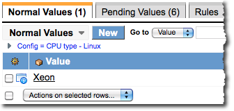
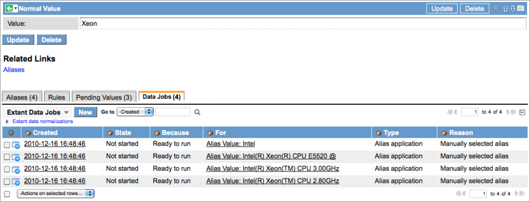
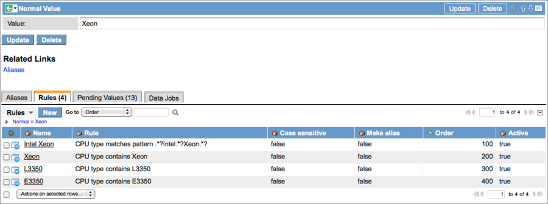

Normalizing a Field
Contents
1 Overview
Field normalization converts different varieties of the same field value, to a single, preferred value. When a process or a user enters a value in a normalized field, the platform determines if that value can be replaced with a normal value. By forcing a field to use a simple, recognizable description for multiple variations of the same value, normalization can eliminate duplicate records and make searches easier. Normalization also automatically adjusts queries to return normalized results and normalizes values in scripts.
Field normalization is available for every field in the ServiceNow platform, with the exception of reference fields. However, some fields are more likely to be normalized than others, such as the CPU type field discussed on this page. Another obvious candidate for normalization is the Name field in the Company table. Company names might appear in records in several different forms (for example, Inc., Incorporated, Corporation). Normalized fields can eliminate confusion by providing logical replacements for ambiguous values.
2 Activating Field Normalization
| Click the plus to expand instructions for activating a plugin. |
|---|
|
If you have the admin role, use the following steps to activate the plugin.
|
3 What Field Normalization Does
Records for things like devices and companies are brought into the ServiceNow platform by manual entry, imports, and Discovery. Depending on how it is introduced into the database, a field value might appear in several different forms. For example, the CPU Type field on a computer CI form might display any of the following names for the same type of CPU, depending on the source of the entry:
- Xeon L3350 or L3350 (manual entry)
- Intel Xeon 5.4.554 (created by Discovery)
- E3350 (Intel) 4.5.2234 (imported value)
The lack of a normalized CPU type field in this example could result in duplicate CMDB records for each variation in the field value. Different CPU types also present a problem for reporting. To report accurately on all computers that use a Xeon processor, an administrator must know all the possible permutations of the name and construct a very complex query. To prevent these issues, an administrator can normalize the original values using one of two methods:
- Aliases: Aliases map all the variations of the name manually to one normal value. Use aliases for short lists of name variants. During processing, the platform looks here first when determining how to normalize a field. If no aliases are defined, the platform searches for rules that apply.
- Rules: Write a rule to associate large numbers of variant names to a normalized value automatically by using standard operators, such as begins with, starts with, or contains. Rules and aliases can be combined to normalize a field. Make sure to test your rules before applying them to all the existing records in the database.
In our example, aliases are sufficient for converting the possible variations of the Intel Xeon CPU type into one, normalized value, such as Xeon. When a recognized variant is entered in a field, the platform automatically replaces the variant with the normalized value. If properly configured, field normalization also affects the search results from a filter in a record list. In our example, an entry of L3350 in a filter returns a list of Xeon CPUs, if that variation of CPU type was normalized.
3.1 Scripting and Normalization
Scripts that update records or insert records into the database (GlideRecord) are normalized automatically when field normalization is applied. For example, if a script to insert a CI record contains a CPU type of Xeon L3350, the script is normalized to insert the CI with a CPU type of Xeon instead. Scripts that query the database for normalized field values (using the conditions of equals or not equals) can be configured to return the normal value (such as Xeon) rather than the original (raw) value.
3.2 Normalized Queries
An administrator can configure normalization to apply to queries issued against normalized fields in lists. Select the Normalize query check box on the Normalization form to enable this functionality. In a list containing normalized values, create a filter using the original (raw) value for the normalized field in the query condition.

The filtered list returns records with the normal value substituted for the raw value. However, the breadcrumbs for the filter display the original query conditions.
{kind=link}
4 Data Jobs
Field Normalization creates four data jobs during the normalization process to collect or change data. All jobs except Pending value collection are executed manually. Data jobs have a roll back feature that allows you to undo normalization at different stages before committing changes that affect the entire database.
- Pending value collection: This data job is created when a field normalization record is submitted. This job runs automatically to collect all the values from the database for the field to be normalized. This data job does not modify the database.
- Normal value change: This data job is created when an existing normal value that is used to normalize a field is changed. When the job is run, the platform updates all the normalized fields in the database that use the new normal value.
- Alias application: This data job is created when an alias is created. When the job is run, all field values in the database containing the alias are normalized.
- Rule application: This data job is created when a rule is created. When the job is run, all field values in the database that match this rule are normalized.
- Coalesce to normal: This data job coalesces data from existing records containing a normalized field value into a single record that uses a normal value.
5 Normalizing a Field
Normalize a field by selecting aliases for a normal field value or by creating rules that use condition statements to match field variants with a normal value. Regardless of the normalization method selected, all field normalization requires a list of existing variants and a normal value that is configured to replace these variants in forms and in queries.
| |
Note: Users must have the normalizer role to create and manage normalization records. |
5.1 Special Cases
- Reference fields cannot be normalized. To normalize values appearing in reference fields, normalize the field in the target table. Examples of this would be normalized values for the Name fields in the Company [core_company] and Location [cmn_location] tables, which are referenced by other tables in the platform. The normalized names are available to all fields that reference these tables.
- Fields in a choice list can be normalized if they are of a type string.
5.2 Creating the Normalization Record
- Activate the Field Normalization plugin.
- Navigate to Field Normalization > Configurations > Normalizations.
- Click New.
- Create a normalization record using the following fields:
| Field | Description | ||
|---|---|---|---|
| Name | Unique name for this normalization record. This value is for reference only and is not used in any processing. | ||
| Table | Select the table for the field being normalized.
| ||
| Field | Select the field to normalize. | ||
| Mode | The three available modes are Off, Test, and Active. All normalization records are created in the test mode by default. If you are planning to select aliases for your normal values, change the Mode to Active. If you intend to normalize the field using rules, be sure to leave this record in the Test mode. To disable this normalization, switch the mode to Off. | ||
| Normalize query | Select this check box to apply the field value normalized by this record to all queries involving this field. Queries formed with the raw (original) field value return records displaying the normal value. Queries issued by a script using the conditions equals or not equals return normalized values. See Normalized Queries for details. | ||
| Coalesce each normal | Select this check box to reset all references in the database to records containing an alias field value to a single record using a normal value. See Coalescing Normal Values for details. | ||
| Raw field | Select the field to use to display the original (non-normalized) input values on a form in which a field value has been normalized. For the selection to appear in the drop-down list, add a custom field to the form for the table selected. For instructions on adding a field for raw data, see Creating a Raw Field. |
After the normalization record is submitted, the platform runs the Pending value collection job in the Data Jobs related list automatically to gather all the current values (Pending Values) for the field being normalized.
{kind=link}
Click the Pending Values related list to view values for the normalized field that have been entered manually, imported into the platform, or created by Discovery.
{kind=link}
5.2.1 Rolling Back Data Jobs
To roll back data gathering, select the job in the Data Job related list, and then click the Rollback related link in the Data normalization jobs form.
{kind=link}
The values in the Pending Values Related List are removed and the data job State indicates that it was rolled back.
{kind=link}
5.3 Creating Normal Values
The normal value is a simplified, generic value for a field that replaces all the possible variants of that value that exist in the database. Normal values should be clear and unambiguous.
After the platform runs the data job, the Pending Values related list on the Data normalization jobs form is populated with all the unique values for the field in the database. Examine the values in the list and decide which normalizing method is best for the existing data. The best practice is to define an alias for a small pool of values and a rule for a large pool of values. The following screenshot shows the pending values for CPU types in Linux servers in a network. The list contains several choices for Intel Xeon CPUs, which might be normalized as Xeon.
{kind=link}
To create a normal value:
- Navigate to Field Normalization > Normalizations.
- Open the appropriate normalization record.
- Click the Normal Values related list.
- Click New.
- In the Normal Value form, create normal values for the variants in the Pending Values related list.
- These are the values the platform uses to replace the variants configured as aliases.
- 
{kind=link}
5.4 Creating Aliases
Aliases are the variants of a field value in the instance that will be replaced by the normal value. The list of potential aliases is the contents of the Pending Values related list. After creating a normal value, assign aliases to this value if the pool of pending values is small. A normalized field can have a combination of aliases and rules.
- Navigate to Field Normalization > Configurations > Normalizations.
- Open a normalization record.
- Click the Normal Values related list.
- Select one of the values.
- In the normal value record, click the Aliases related link.
- Select aliases for this normal value from the available (pending) values that appear in the slushbucket, and then click OK.
{kind=link}
{kind=link}
{kind=link}
5.4.1 Applying Aliases
After testing, aliases can be normalized in all new records or in existing records when they are updated. Each time an alias is created for a normal value, a data job is created. The alias is not applied to values in the entire database until its data job is started manually. Run each job separately or run the jobs together to apply all aliases at once.
- In a normalization record, ensure that the Mode is set to Active.
- Data jobs cannot run in the Test mode.
- Click the Normal value related list.
- Select a value from list.
- In the Normal Value record, select the Data Jobs related list.
- A data job is listed for each alias configured for this normal value.
- 
- Run the extant data jobs to replace the aliases with the normal value in all existing records in the database.
- a. Select the check box next to a job, and then select Start from the Actions menu.
- b. To run all data jobs at once, select all the check boxes, and then select the Start action.
- c. Refresh the list to check the progress of the data jobs to ensure that they complete normally.
{kind=link}
5.5 Creating Rules
The use of rules to normalize a field is intended for large lists of variant field values. Always test your rules before applying them to all the existing records in the database. Prior to creating the rule, make sure to generate the list of Pending Values and create a normal value for the field. A normalized field can have a combination of aliases and rules.
The rules in this example are based on the following Pending Values:
{kind=link}
- In a Normalization record, open the Normal Values related list.
- Open a Normal Value record.
- Open the Rules related list in the Normal Value form, and then click New.
- The Field Normalization Rule form provides the following fields:
- Name: Unique name for this rule. For example, this name might be Xeon CPU Type.
- Order: Order in which this rule should be evaluated. The platform parses the rules in the order configured until it finds one that evaluates to true.
- Active: Enables or disables this rule. By default, new rules are active (true)
- Make alias: If this check box is selected, and the rule evaluates to true, the rule makes an alias automatically from a pending value. If this check box is not selected, and the rule evaluates to true, the platform automatically changes the value for the named field in the record to the normal value, but does not create an alias.
- Case sensitive: All pending values for the named field must match the case of the same value in a rule to be normalized.
- Rule: Use the ServiceNow rule builder to construct the rules for normalizing fields. Rules automate the transformation of large numbers of pending field values into aliases.
- Create a set of rules to incorporate all the possible variants of the pending values.
- For this example, the rules might be:
- Intel Xeon: CPU type matches pattern *Intel*Xeon*. This rule normalizes all variants in which Intel precedes Xeon, including Intel Xeon, Intel(R) Xeon(TM) CPU 2.80GHz, and Intel(R) Xeon(TM) CPU 3.00GHz.
- Xeon: CPU type contains Xeon
- L3350: CPU type contains L3350
- E3350: CPU type contains E3350
- 
- For every rule that is created, the platform generates a Rule applier data job. In the testing mode, the Start controls are not available, and the job cannot be run until the mode is changed to Active.
- Test all the rules before making the normalization record Active.
{kind=link}
5.5.1 Testing Rules
| |
Note: Users must have the normalization_tester role to create test records. |
Field normalization records are created in the Test mode by default, enabling administrators to test normalization rules thoroughly before applying them to the existing records in the database. In the testing mode, the Start controls are not available for the Rule applier data job. The job can be run only when testing is complete and the Mode has been changed to Active. In the testing mode, only records that have been created or updated by a user with the normalization_tester role are normalized. The normalizer and normalization_tester roles can be combined for a single user or granted separately.
5.6 Coalescing Normal Values
Coalescence enables an administrator to redirect references to multiple records containing variants of the same field value to point to a single record, based on a normal value. An example of this is the Company table that might have multiple variants of a company name, such as Hewlett-Packard, Hewlett-Packard, Inc., Hewlett-Packard Incorporated, HP, and so on. Potentially, thousands of records might reference each of these duplicate company records. Using the variants of the Hewlett-Packard name as aliases, coalescence unifies all these references into a single record that normalizes the Name field in the Company record to a normal value such as HP.
| |
Note: Coalescing normal values changes the record values permanently. If a rollback is performed, records will be returned to the table, but the normalized values will not be rolled back to the original variants. |
To coalesce records on a normal value:
- In a normalization record, select the Coalesce each normal check box.
- This applies coalescence to each normal value in the record.
- Create a normal value for this field, including aliases.
- An additional field called Coalesce to appears on the Normal Value form.
- Click the magnifier icon in this field and select the specific record from the table (containing this normal value) to which all references should be coalesced.
- Update the record.
- Start all the Alias application data jobs to replace the aliases with the normal value in existing records in the database.
- After these jobs have completed, the Coalesce to normal data jobs start automatically for each alias. These jobs redirect all references to normalized records to the selected coalesce record and remove all duplicate records from the database.
{kind=link}
{kind=link}
6 Creating a Raw Field
A Raw field is a custom field created by an administrator to show the original (raw) input in a field on a form after it has been normalized or transformed.
- In the form containing the field that is being normalized or transformed, right-click in the header bar.
- Select the appropriate option for your version:
- Complete the Create new field form at the bottom of the page, and then click Add:
- Name: Type the field label. In this case, use Raw + <field label>.
- Type: Select a data type from the list for this field.
- Field length: Select the character limit for this field. The default is 40.
- Move the new field adjacent to the normalized field using the direction arrows in the slushbucket.
- Click Save.
{kind=link}
7 Identifying Normalized Fields
Normalized fields in ServiceNow records are marked with an icon that links to different targets, depending on the user's role. Users with the normalizer role can click on the icon to access the normalization configuration record for that field directly. When a user without the normalizer role clicks the link, a Wiki page appears that provides help on the form. A preference, called Restrict to roles, enables an administrator to define the roles that are permitted to see the icon. If no roles are specified, then the icon is visible to all roles.
{kind=link}